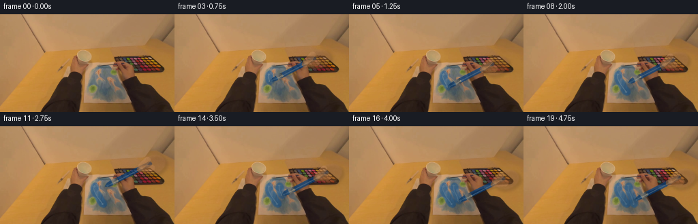
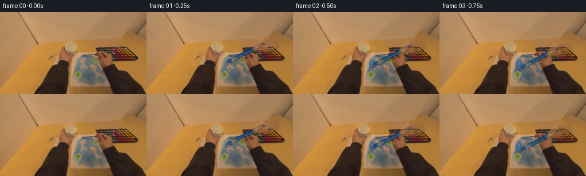

CODING AGENTS AS PIXEL WORLD MODELS
traex/GPT-5.6-Sol · common50_0017
点击播放 · 原生 RGB 像素
逐轮保存的候选
回放视频、检查图与代码变化。
每份候选均可单独播放。实际图片检查记录在下方工具轨迹中。
候选 01播放与检查图
点击播放 · 原生 RGB 像素

展开代码变化
--- 上一保存版本
+++ 本次保存版本
@@ -0,0 +1,237 @@
+from pathlib import Path
+import math
+import cv2
+import numpy as np
+from PIL import Image
+import artifact_io
+
+# This continuation is made entirely from the supplied RGB frame. The scene is
+# kept fixed (as it would be for a person concentrating on a small painting),
+# while soft, anti-aliased layers model wet paint and the moving brush/hand.
+ROOT = Path(__file__).resolve().parent
+FIRST = np.asarray(Image.open(ROOT / "first_frame.png").convert("RGB"), dtype=np.uint8)
+H, W = FIRST.shape[:2]
+assert (W, H) == (256, 144)
+
+Y, X = np.mgrid[0:H, 0:W]
+rng = np.random.default_rng(1729)
+# Fine, fixed texture is used only to keep painted and skin areas photographic.
+texture = cv2.GaussianBlur(rng.normal(0, 1, (H, W)).astype(np.float32), (0, 0), .55)
+
+
+def mask_line(points, width, close=False):
+ """Anti-aliased polyline mask."""
+ m = np.zeros((H, W), np.uint8)
+ pts = np.rint(points).astype(np.int32)
+ if len(pts) == 1:
+ cv2.circle(m, tuple(pts[0]), max(1, int(width / 2)), 255, -1, cv2.LINE_AA)
+ else:
+ cv2.polylines(m, [pts], close, 255, max(1, int(round(width))), cv2.LINE_AA)
+ # Round ends are important for a loaded natural-hair brush.
+ r = max(1, int(round(width / 2)))
+ cv2.circle(m, tuple(pts[0]), r, 255, -1, cv2.LINE_AA)
+ cv2.circle(m, tuple(pts[-1]), r, 255, -1, cv2.LINE_AA)
+ return m.astype(np.float32) / 255.0
+
+
+def polygon_mask(points, blur=0.0):
+ m = np.zeros((H, W), np.uint8)
+ cv2.fillPoly(m, [np.rint(points).astype(np.int32)], 255, cv2.LINE_AA)
+ a = m.astype(np.float32) / 255.0
+ if blur:
+ a = cv2.GaussianBlur(a, (0, 0), blur)
+ return np.clip(a, 0, 1)
+
+
+def ellipse_mask(center, axes, angle, blur=.4):
+ m = np.zeros((H, W), np.uint8)
+ cv2.ellipse(m, tuple(np.rint(center).astype(int)), tuple(np.rint(axes).astype(int)),
+ float(angle), 0, 360, 255, -1, cv2.LINE_AA)
+ a = m.astype(np.float32) / 255.0
+ if blur:
+ a = cv2.GaussianBlur(a, (0, 0), blur)
+ return np.clip(a, 0, 1)
+
+
+def composite_color(im, color, alpha, preserve=.35, tex_amount=0.0):
+ """Tint pixels while retaining the illumination and grain in frame zero."""
+ src = im.astype(np.float32)
+ lum = (.299 * src[..., 0] + .587 * src[..., 1] + .114 * src[..., 2])
+ target = np.array(color, np.float32)[None, None, :]
+ # A small luminance residual makes the new material belong under scene light.
+ lit = target + preserve * (lum[..., None] - 105.0)
+ if tex_amount:
+ lit += texture[..., None] * tex_amount
+ a = np.clip(alpha, 0, 1)[..., None]
+ return np.clip(src * (1 - a) + lit * a, 0, 255)
+
+
+# Two deliberate, slightly curved strokes. Values are in image pixels and stay
+# within the blue patch visible near the centre of the supplied paper.
+stroke1 = np.array([
+ [139.0, 88.5], [138.3, 91.5], [139.0, 95.0], [141.0, 99.0],
+ [143.5, 103.0], [146.0, 107.3], [149.2, 111.5], [151.0, 114.0]
+], np.float32)
+stroke2 = np.array([
+ [154.5, 87.5], [154.0, 91.2], [155.0, 95.0], [157.0, 99.0],
+ [159.0, 103.0], [160.5, 107.0], [161.8, 111.0], [162.0, 114.0]
+], np.float32)
+
+
+def interp_polyline(path, q):
+ q = float(np.clip(q, 0, 1))
+ d = np.sqrt(((path[1:] - path[:-1]) ** 2).sum(1))
+ cum = np.r_[0, np.cumsum(d)]
+ z = q * cum[-1]
+ k = min(len(d) - 1, int(np.searchsorted(cum, z, side="right") - 1))
+ f = (z - cum[k]) / max(d[k], 1e-6)
+ return path[k] * (1 - f) + path[k + 1] * f
+
+
+def partial_path(path, q):
+ q = float(np.clip(q, 0, 1))
+ d = np.sqrt(((path[1:] - path[:-1]) ** 2).sum(1))
+ cum = np.r_[0, np.cumsum(d)]
+ z = q * cum[-1]
+ out = [path[0]]
+ for k in range(len(d)):
+ if cum[k + 1] <= z:
+ out.append(path[k + 1])
+ elif cum[k] < z:
+ f = (z - cum[k]) / d[k]
+ out.append(path[k] * (1 - f) + path[k + 1] * f)
+ break
+ return np.asarray(out, np.float32)
+
+
+def draw_wet_paint(im, done1, done2, age):
+ out = im.astype(np.float32)
+ for path, done, phase in ((stroke1, done1, 0.0), (stroke2, done2, 1.7)):
+ if done <= 0:
+ continue
+ p = partial_path(path, done)
+ # A broken dark rim plus a broad translucent body resembles paint sitting
+ # on fibrous paper rather than a computer-perfect line.
+ body = mask_line(p, 9.0)
+ edge = np.clip(mask_line(p, 10.8) - body * .70, 0, 1)
+ irregular = np.clip(1 + .10 * texture + .045 * np.sin(X * .73 + Y * .39 + phase), .72, 1.16)
+ body *= irregular
+ out = composite_color(out, (43, 83, 119), edge * .28, preserve=.28, tex_amount=1.8)
+ out = composite_color(out, (45, 91, 132), body * .72, preserve=.38, tex_amount=2.4)
+ # Narrow glints move very little but fade as the paint settles.
+ if len(p) > 1:
+ glint_pts = p + np.array([-1.2, -0.2], np.float32)
+ glint = mask_line(glint_pts, 1.15)
+ wet = max(.20, .62 - .018 * age)
+ out = composite_color(out, (132, 151, 160), glint * wet, preserve=.18)
+ return out
+
+
+def draw_brush_and_hand(im, tip, lift, frame_index):
+ out = im.astype(np.float32)
+ # Brush points from the paper toward the painter's right hand.
+ u = np.array([.890, -.456], np.float32)
+ n = np.array([-u[1], u[0]], np.float32)
+ tip = np.asarray(tip, np.float32)
+ # During the return, the brush is visibly lifted a little above the page.
+ tip_vis = tip + n * (-1.8 * lift)
+ b0 = tip_vis
+ b1 = tip_vis + u * (10.0 - 1.0 * lift)
+ f1 = tip_vis + u * 10.0
+ f2 = tip_vis + u * 19.0
+ grip = tip_vis + u * 64.0
+
+ # Soft cast shadow onto paper and the hand behind it.
+ shadow_path = np.vstack([b0 + [1.5, 2.1], grip + [1.5, 2.1]])
+ sh = cv2.GaussianBlur(mask_line(shadow_path, 5.8), (0, 0), 2.0)
+ out = composite_color(out, (44, 35, 31), sh * (.24 - .08 * lift), preserve=.20)
+
+ # Blue wooden handle. Its highlight is offset toward the scene light.
+ handle = mask_line(np.vstack([f2 - u * 1.0, grip + u * 8.0]), 5.2)
+ out = composite_color(out, (34, 70, 111), handle * .94, preserve=.27, tex_amount=1.2)
+ hi = mask_line(np.vstack([f2 + n * .9, grip + u * 5 + n * .9]), 1.1)
+ out = composite_color(out, (91, 121, 145), hi * .66, preserve=.16)
+
+ # Dull metal ferrule with separate highlight and dark seam.
+ ferrule_poly = np.array([f1 - n * 3.0, f2 - n * 2.7, f2 + n * 2.7, f1 + n * 3.0])
+ ferrule = polygon_mask(ferrule_poly, .25)
+ out = composite_color(out, (110, 112, 109), ferrule * .93, preserve=.48, tex_amount=.7)
+ seam = mask_line(np.vstack([f2 - n * 2.5, f2 + n * 2.5]), .9)
+ out = composite_color(out, (53, 61, 64), seam * .55, preserve=.25)
+ metal_hi = mask_line(np.vstack([f1 + n * 1.2, f2 + n * 1.0]), .85)
+ out = composite_color(out, (176, 168, 145), metal_hi * .55, preserve=.16)
+
+ # Paint-loaded bristles taper to the actual point of contact.
+ bristle_poly = np.array([
+ b0, b0 + u * 4.0 - n * 2.7, b1 - n * 3.0,
+ b1 + n * 3.0, b0 + u * 4.0 + n * 2.7
+ ])
+ br = polygon_mask(bristle_poly, .28)
+ out = composite_color(out, (31, 67, 103), br * .96, preserve=.30, tex_amount=1.5)
+ br_hi = mask_line(np.vstack([b0 + u * 2 + n * .7, b1 + n * .7]), .8)
+ out = composite_color(out, (73, 110, 139), br_hi * .66, preserve=.18)
+
+ # The supplied image already contains the arm/hand. These translucent shapes
+ # articulate its thumb and gripping fingers as they follow the handle, while
+ # preserving the original photographic texture below.
+ palm_c = grip + u * 13.0 + np.array([1.0, 3.5], np.float32)
+ palm = ellipse_mask(palm_c, (18.5, 13.0), -18, .65)
+ hand_shadow = cv2.GaussianBlur(ellipse_mask(palm_c + [2, 3], (20, 14), -18, 0), (0, 0), 2.0)
+ out = composite_color(out, (67, 43, 29), hand_shadow * .22, preserve=.25)
+ # Keep this low enough for pores and existing fingers to remain visible.
+ out = composite_color(out, (164, 112, 68), palm * .43, preserve=.46, tex_amount=3.0)
+
+ # Curled index finger above, and thumb crossing the blue handle.
+ index_pts = np.vstack([palm_c + [-8, -7], grip + u * 1.5 - n * 3.8, grip - u * 4 - n * 2.0])
+ idx = mask_line(index_pts, 7.2)
+ out = composite_color(out, (177, 124, 77), idx * .56, preserve=.44, tex_amount=2.2)
+ thumb_pts = np.vstack([palm_c + [-2, 5], grip - u * 4 + n * 2.0, grip - u * 8 + n * 1.0])
+ thumb = mask_line(thumb_pts, 8.0)
+ out = composite_color(out, (173, 119, 72), thumb * .62, preserve=.44, tex_amount=2.0)
+ nail_c = grip - u * 6 + n * .8
+ nail = ellipse_mask(nail_c, (3.2, 2.1), -18, .25)
+ out = composite_color(out, (188, 145, 105), nail * .30, preserve=.35)
+ return out
+
+
+frames = [FIRST.copy()]
+for f in range(1, 20):
+ # Temporal choreography: paint down once, lift/reset, paint a nearby second
+ # band, then lift slightly while remaining in shot.
+ if f <= 7:
+ q1 = (f - 1) / 6.0
+ q2 = 0.0
+ tip = interp_polyline(stroke1, q1)
+ lift = 0.0
+ elif f <= 10:
+ q1, q2 = 1.0, 0.0
+ r = (f - 7) / 3.0
+ # Raised return follows an arc, not a mechanically straight teleport.
+ tip = stroke1[-1] * (1 - r) + stroke2[0] * r + np.array([2.5 * math.sin(math.pi*r), -4.2 * math.sin(math.pi*r)])
+ lift = math.sin(math.pi * r)
+ elif f <= 17:
+ q1 = 1.0
+ q2 = (f - 11) / 6.0
+ tip = interp_polyline(stroke2, q2)
+ lift = 0.0
+ else:
+ q1, q2 = 1.0, 1.0
+ r = (f - 17) / 2.0
+ tip = stroke2[-1] + np.array([1.8*r, -5.0*r], np.float32)
+ lift = .75 * r
+
+ base = draw_wet_paint(FIRST, q1, q2, f)
+ frame = draw_brush_and_hand(base, tip, lift, f)
+
+ # A very small exposure pulse is confined around the moving hand; it models
+ # the arm changing reflected light without making the fixed paper swim.
+ grip_approx = tip + np.array([57, -29], np.float32)
+ halo = np.exp(-(((X - grip_approx[0]) / 42) ** 2 + ((Y - grip_approx[1]) / 31) ** 2) * 2.0)
+ pulse = .55 * math.sin(f * .63)
+ frame = np.clip(frame + halo[..., None] * pulse, 0, 255).astype(np.uint8)
+ frames.append(frame)
+
+frames = np.stack(frames).astype(np.uint8)
+assert np.array_equal(frames[0], FIRST)
+assert frames.shape == (20, 144, 256, 3)
+artifact_io.save(frames, ROOT)
候选 02播放与检查图
点击播放 · 原生 RGB 像素


展开代码变化
--- 上一保存版本
+++ 本次保存版本
@@ -227,6 +227,7 @@
# the arm changing reflected light without making the fixed paper swim.
grip_approx = tip + np.array([57, -29], np.float32)
halo = np.exp(-(((X - grip_approx[0]) / 42) ** 2 + ((Y - grip_approx[1]) / 31) ** 2) * 2.0)
+ halo[halo < .035] = 0.0
pulse = .55 * math.sin(f * .63)
frame = np.clip(frame + halo[..., None] * pulse, 0, 255).astype(np.uint8)
frames.append(frame)
候选 03播放与检查图
可观测工具轨迹
实际执行的命令与返回图片。
命令 1exit 0
/bin/bash -lc "cat GENERATION_RULES.md && printf '\\n---PROMPT---\\n' && cat prompt.txt"
命令 2exit 127
/bin/bash -lc "find . -maxdepth 2 -type f -printf '%p %s bytes\\n' | sort && file first_frame.png"
命令 3exit 0
/bin/bash -lc "cat task_spec.json; sed -n '1,240p' artifact_io.py"
命令 4exit 0
/bin/bash -lc "python - <<'PY'
from PIL import Image
import numpy as np
im=np.array(Image.open('first_frame.png').convert('RGB'))
print(im.shape, im.dtype, im.min((0,1)),im.max((0,1)),im.mean((0,1)))
# most common quantized and exact colors
for step in [1,8,16,32]:
a=(im//step)*step
u,c=np.unique(a.reshape(-1,3),axis=0,return_counts=True); ii=np.argsort(c)[-15:][::-1]
print('\\nstep',step)
for i in ii: print(tuple(u[i]),c[i])
PY"命令 5exit 2
/bin/bash -lc "cat > /tmp/an.py <<'PY'
import cv2, numpy as np
from PIL import Image
im=np.array(Image.open('first_frame.png').convert('RGB')); h,w,_=im.shape
# k means Lab + xy weak
lab=cv2.cvtColor(im,cv2.COLOR_RGB2LAB).reshape(-1,3).astype(np.float32)
xy=np.indices((h,w)).transpose(1,2,0)[...,::-1].reshape(-1,2).astype(np.float32)
feat=np.c_[lab,xy[:,0]*.18,xy[:,1]*.18]
crit=(cv2.TERM_CRITERIA_EPS+cv2.TERM_CRITERIA_MAX_ITER,100,.2)
_,lbl,cen=cv2.kmeans(feat,14,None,crit,10,cv2.KMEANS_PP_CENTERS); lbl=lbl.ravel().reshape(h,w)
cs=[]
for k in range(14):
m=lbl==k; rgb=np.mean(im[m],0); ys,xs=np.where(m)
cs.append((k,m.sum(),rgb, (xs.min(),ys.min(),xs.max(),ys.max()), (xs.mean(),ys.mean())))
for q in sorted(cs,key=lambda z:z[2].mean()): print('%2d n=%5d rgb=%s box=%s ctr=(%.0f,%.0f)'%(q[0],q[1],np.round(q[2]).astype(int),q[3],*q[4]))
chars='0123456789ABCD'
print('\\nlabels sample mode blocks 4x4:')
for y in range(0,h,4):
print(''.join(chars[np.bincount(lbl[y:y+4,x:x+4].ravel(),minlength=14).argmax()] for x in range(0,w,4)))
# saturation/color axes extremes areas
mx=im.max(2); mn=im.min(2); sat=mx-mn
print('channel dominance counts',[(c, int(((im[:,:,c]-np.max(np.delete(im,c,2),2))>10).sum())) for c in range(3)])
for name,m in [('blue_dom',im[:,:,2]>im[:,:,0]+10),('blue_rel',im[:,:,2]>im[:,:,0]),('bright',im.mean(2)>160),('dark',im.mean(2)<60),('sat',sat>80)]:
n=m.sum(); print(name,n)
if n:
ys,xs=np.where(m); print('box',xs.min(),ys.min(),xs.max(),ys.max(),'ctr',xs.mean(),ys.mean())
PY
python /tmp/an.py"命令 6exit 0
/bin/bash -lc "cat > .tmp/an.py <<'PY'
import cv2, numpy as np
from PIL import Image
im=np.array(Image.open('first_frame.png').convert('RGB')); h,w,_=im.shape
lab=cv2.cvtColor(im,cv2.COLOR_RGB2LAB).reshape(-1,3).astype(np.float32)
xy=np.indices((h,w)).transpose(1,2,0)[...,::-1].reshape(-1,2).astype(np.float32)
feat=np.c_[lab,xy[:,0]*.18,xy[:,1]*.18]
crit=(cv2.TERM_CRITERIA_EPS+cv2.TERM_CRITERIA_MAX_ITER,100,.2)
_,lbl,cen=cv2.kmeans(feat,14,None,crit,10,cv2.KMEANS_PP_CENTERS); lbl=lbl.ravel().reshape(h,w)
cs=[]
for k in range(14):
m=lbl==k; rgb=np.mean(im[m],0); ys,xs=np.where(m)
cs.append((k,m.sum(),rgb, (xs.min(),ys.min(),xs.max(),ys.max()), (xs.mean(),ys.mean())))
for q in sorted(cs,key=lambda z:z[2].mean()): print('%2d n=%5d rgb=%s box=%s ctr=(%.0f,%.0f)'%(q[0],q[1],np.round(q[2]).astype(int),q[3],*q[4]))
chars='0123456789ABCD'
print('\\nlabels sample mode blocks 4x4:')
for y in range(0,h,4): print(''.join(chars[np.bincount(lbl[y:y+4,x:x+4].ravel(),minlength=14).argmax()] for x in range(0,w,4)))
mx=im.max(2); mn=im.min(2); sat=mx-mn
print('channel dominance counts',[(c, int(((im[:,:,c]-np.max(np.delete(im,c,2),2))>10).sum())) for c in range(3)])
for name,m in [('blue_dom',im[:,:,2]>im[:,:,0]+10),('blue_rel',im[:,:,2]>im[:,:,0]),('bright',im.mean(2)>160),('dark',im.mean(2)<60),('sat',sat>80)]:
n=m.sum(); print(name,n)
if n:
ys,xs=np.where(m); print('box',xs.min(),ys.min(),xs.max(),ys.max(),'ctr',xs.mean(),ys.mean())
PY
python .tmp/an.py"命令 7exit 0
/bin/bash -lc "cat > .tmp/maps.py <<'PY'
from PIL import Image
import numpy as np, cv2
im=np.array(Image.open('first_frame.png').convert('RGB')).astype(int); h,w,_=im.shape
# 2x2/4x4 maps for color regions
R,G,B=im.transpose(2,0,1)
ms={
'blue':(B>R)&(B>G),
'blue10':(B>R+10)&(B>G+3),
'neutral':((im.max(2)-im.min(2))<22)&(im.mean(2)>65),
'dark':im.mean(2)<70,
'edge':cv2.Canny(im.astype('uint8'),50,100)>0}
for name,m in ms.items():
print('\\n',name)
s=2; yy,xx=np.where(m)
if not len(xx):continue
x0=max(0,xx.min()//s*s-2);x1=min(w,(xx.max()//s+1)*s+2);y0=max(0,yy.min()//s*s-2);y1=min(h,(yy.max()//s+1)*s+2)
# if wide use 4
if x1-x0>130:s=4;x0=max(0,xx.min()//s*s-4);x1=min(w,(xx.max()//s+1)*s+4);y0=max(0,yy.min()//s*s-4);y1=min(h,(yy.max()//s+1)*s+4)
print(x0,y0,x1,y1,'s',s)
for y in range(y0,y1,s):
print(''.join('#' if m[y:y+s,x:x+s].mean()>.25 else '+' if m[y:y+s,x:x+s].any() else ' ' for x in range(x0,x1,s)))
PY
python .tmp/maps.py"命令 8exit 0
/bin/bash -lc "python - <<'PY'
import cv2,numpy as np
from PIL import Image
im=np.array(Image.open('first_frame.png').convert('RGB'))
g=cv2.cvtColor(im,cv2.COLOR_RGB2GRAY)
e=cv2.Canny(g,35,80)
ls=cv2.HoughLinesP(e,1,np.pi/180,threshold=35,minLineLength=25,maxLineGap=7)
print('lines')
for l in sorted(ls[:,0],key=lambda q:-np.hypot(q[2]-q[0],q[3]-q[1]))[:40]:
print(l,'len',round(np.hypot(l[2]-l[0],l[3]-l[1]),1),'angle',round(np.degrees(np.arctan2(l[3]-l[1],l[2]-l[0])),1))
# Print RGB patches sampled every 4, classify nearest semantic color using ratios / light bins
# output avg RGB each 16x16 grid
for y in range(0,144,12):
print(' '.join('%02x%02x%02x'%tuple(im[y:y+12,x:x+16].mean((0,1)).astype(int)) for x in range(0,256,16)))
PY"命令 9exit 0
/bin/bash -lc "python - <<'PY'
from PIL import Image
import numpy as np,cv2
im=np.array(Image.open('first_frame.png').convert('RGB')); a=im.astype(int);R,G,B=a.transpose(2,0,1)
for name,m in [('B>R',(B>R)),('B>R+5',(B>R+5)),('gray',(a.max(2)-a.min(2)<35)&(a.mean(2)>60)),('graydark',(a.max(2)-a.min(2)<25)&(a.mean(2)<100))]:
m=m.astype('uint8'); n,l,st,cen=cv2.connectedComponentsWithStats(m,8)
print('\\n',name)
for i in np.argsort(st[1:,4])[::-1][:15]+1:
if st[i,4]<4:break
print(st[i].tolist(),'center',np.round(cen[i],1))
PY"命令 10exit 0
/bin/bash -lc "python - <<'PY'
import cv2,numpy as np
from PIL import Image
im=np.array(Image.open('first_frame.png').convert('RGB'));a=im.astype(int)
for th in [130,140,150,160,170]:
m=(a.mean(2)>th).astype('uint8'); n,l,s,c=cv2.connectedComponentsWithStats(m,8)
print('\\n>',th,'total',m.sum())
for i in np.argsort(s[1:,4])[::-1][:10]+1:
if s[i,4]<5:break
print(s[i].tolist(),np.round(c[i],1))
# explicit pixel values central 8 grid
for y in range(56,137,8):
print('y',y, ['%3d,%3d,%3d'%tuple(im[y,x]) for x in range(104,233,8)])
PY"命令 11exit 0
/bin/bash -lc "python - <<'PY'
from PIL import Image
import numpy as np
im=np.array(Image.open('first_frame.png')).astype(int);R,G,B=im.transpose(2,0,1); m=(B>R)&(B>G)
for y in range(60,130):
xs=np.where(m[y])[0]
if len(xs):
# runs
z=np.split(xs,np.where(np.diff(xs)>1)[0]+1)
print(y,[(a[0],a[-1],len(a)) for a in z if len(a)>0])
PY"命令 12exit 0
/bin/bash -lc "python - <<'PY'
from PIL import Image
import numpy as np
im=np.array(Image.open('first_frame.png')).astype(float);R,G,B=im.transpose(2,0,1)
for mname,m in [('blue',(B>R)&(B>G)),('strong',(B>R+5)&(B>G+2)),('central',np.ones(R.shape,bool))]:
if mname=='central': m &= (np.indices(R.shape)[1]>=128)&(np.indices(R.shape)[1]<180)&(np.indices(R.shape)[0]>=75)&(np.indices(R.shape)[0]<120)
vals=im[m]
print(mname,len(vals),np.percentile(vals,[10,50,90],axis=0),vals.mean(0))
PY"命令 13exit 0
/bin/bash -lc "cat > generate.py <<'PY'
from pathlib import Path
import math
import cv2
import numpy as np
from PIL import Image
import artifact_io
# This continuation is made entirely from the supplied RGB frame. The scene is
# kept fixed (as it would be for a person concentrating on a small painting),
# while soft, anti-aliased layers model wet paint and the moving brush/hand.
ROOT = Path(__file__).resolve().parent
FIRST = np.asarray(Image.open(ROOT / \"first_frame.png\").convert(\"RGB\"), dtype=np.uint8)
H, W = FIRST.shape[:2]
assert (W, H) == (256, 144)
Y, X = np.mgrid[0:H, 0:W]
rng = np.random.default_rng(1729)
# Fine, fixed texture is used only to keep painted and skin areas photographic.
texture = cv2.GaussianBlur(rng.normal(0, 1, (H, W)).astype(np.float32), (0, 0), .55)
def mask_line(points, width, close=False):
\"\"\"Anti-aliased polyline mask.\"\"\"
m = np.zeros((H, W), np.uint8)
pts = np.rint(points).astype(np.int32)
if len(pts) == 1:
cv2.circle(m, tuple(pts[0]), max(1, int(width / 2)), 255, -1, cv2.LINE_AA)
else:
cv2.polylines(m, [pts], close, 255, max(1, int(round(width))), cv2.LINE_AA)
# Round ends are important for a loaded natural-hair brush.
r = max(1, int(round(width / 2)))
cv2.circle(m, tuple(pts[0]), r, 255, -1, cv2.LINE_AA)
cv2.circle(m, tuple(pts[-1]), r, 255, -1, cv2.LINE_AA)
return m.astype(np.float32) / 255.0
def polygon_mask(points, blur=0.0):
m = np.zeros((H, W), np.uint8)
cv2.fillPoly(m, [np.rint(points).astype(np.int32)], 255, cv2.LINE_AA)
a = m.astype(np.float32) / 255.0
if blur:
a = cv2.GaussianBlur(a, (0, 0), blur)
return np.clip(a, 0, 1)
def ellipse_mask(center, axes, angle, blur=.4):
m = np.zeros((H, W), np.uint8)
cv2.ellipse(m, tuple(np.rint(center).astype(int)), tuple(np.rint(axes).astype(int)),
float(angle), 0, 360, 255, -1, cv2.LINE_AA)
a = m.astype(np.float32) / 255.0
if blur:
a = cv2.GaussianBlur(a, (0, 0), blur)
return np.clip(a, 0, 1)
def composite_color(im, color, alpha, preserve=.35, tex_amount=0.0):
\"\"\"Tint pixels while retaining the illumination and grain in frame zero.\"\"\"
src = im.astype(np.float32)
lum = (.299 * src[..., 0] + .587 * src[..., 1] + .114 * src[..., 2])
target = np.array(color, np.float32)[None, None, :]
# A small luminance residual makes the new material belong under scene light.
lit = target + preserve * (lum[..., None] - 105.0)
if tex_amount:
lit += texture[..., None] * tex_amount
a = np.clip(alpha, 0, 1)[..., None]
return np.clip(src * (1 - a) + lit * a, 0, 255)
# Two deliberate, slightly curved strokes. Values are in image pixels and stay
# within the blue patch visible near the centre of the supplied paper.
stroke1 = np.array([
[139.0, 88.5], [138.3, 91.5], [139.0, 95.0], [141.0, 99.0],
[143.5, 103.0], [146.0, 107.3], [149.2, 111.5], [151.0, 114.0]
], np.float32)
stroke2 = np.array([
[154.5, 87.5], [154.0, 91.2], [155.0, 95.0], [157.0, 99.0],
[159.0, 103.0], [160.5, 107.0], [161.8, 111.0], [162.0, 114.0]
], np.float32)
def interp_polyline(path, q):
q = float(np.clip(q, 0, 1))
d = np.sqrt(((path[1:] - path[:-1]) ** 2).sum(1))
cum = np.r_[0, np.cumsum(d)]
z = q * cum[-1]
k = min(len(d) - 1, int(np.searchsorted(cum, z, side=\"right\") - 1))
f = (z - cum[k]) / max(d[k], 1e-6)
return path[k] * (1 - f) + path[k + 1] * f
def partial_path(path, q):
q = float(np.clip(q, 0, 1))
d = np.sqrt(((path[1:] - path[:-1]) ** 2).sum(1))
cum = np.r_[0, np.cumsum(d)]
z = q * cum[-1]
out = [path[0]]
for k in range(len(d)):
if cum[k + 1] <= z:
out.append(path[k + 1])
elif cum[k] < z:
f = (z - cum[k]) / d[k]
out.append(path[k] * (1 - f) + path[k + 1] * f)
break
return np.asarray(out, np.float32)
def draw_wet_paint(im, done1, done2, age):
out = im.astype(np.float32)
for path, done, phase in ((stroke1, done1, 0.0), (stroke2, done2, 1.7)):
if done <= 0:
continue
p = partial_path(path, done)
# A broken dark rim plus a broad translucent body resembles paint sitting
# on fibrous paper rather than a computer-perfect line.
body = mask_line(p, 9.0)
edge = np.clip(mask_line(p, 10.8) - body * .70, 0, 1)
irregular = np.clip(1 + .10 * texture + .045 * np.sin(X * .73 + Y * .39 + phase), .72, 1.16)
body *= irregular
out = composite_color(out, (43, 83, 119), edge * .28, preserve=.28, tex_amount=1.8)
out = composite_color(out, (45, 91, 132), body * .72, preserve=.38, tex_amount=2.4)
# Narrow glints move very little but fade as the paint settles.
if len(p) > 1:
glint_pts = p + np.array([-1.2, -0.2], np.float32)
glint = mask_line(glint_pts, 1.15)
wet = max(.20, .62 - .018 * age)
out = composite_color(out, (132, 151, 160), glint * wet, preserve=.18)
return out
def draw_brush_and_hand(im, tip, lift, frame_index):
out = im.astype(np.float32)
# Brush points from the paper toward the painter's right hand.
u = np.array([.890, -.456], np.float32)
n = np.array([-u[1], u[0]], np.float32)
tip = np.asarray(tip, np.float32)
# During the return, the brush is visibly lifted a little above the page.
tip_vis = tip + n * (-1.8 * lift)
b0 = tip_vis
b1 = tip_vis + u * (10.0 - 1.0 * lift)
f1 = tip_vis + u * 10.0
f2 = tip_vis + u * 19.0
grip = tip_vis + u * 64.0
# Soft cast shadow onto paper and the hand behind it.
shadow_path = np.vstack([b0 + [1.5, 2.1], grip + [1.5, 2.1]])
sh = cv2.GaussianBlur(mask_line(shadow_path, 5.8), (0, 0), 2.0)
out = composite_color(out, (44, 35, 31), sh * (.24 - .08 * lift), preserve=.20)
# Blue wooden handle. Its highlight is offset toward the scene light.
handle = mask_line(np.vstack([f2 - u * 1.0, grip + u * 8.0]), 5.2)
out = composite_color(out, (34, 70, 111), handle * .94, preserve=.27, tex_amount=1.2)
hi = mask_line(np.vstack([f2 + n * .9, grip + u * 5 + n * .9]), 1.1)
out = composite_color(out, (91, 121, 145), hi * .66, preserve=.16)
# Dull metal ferrule with separate highlight and dark seam.
ferrule_poly = np.array([f1 - n * 3.0, f2 - n * 2.7, f2 + n * 2.7, f1 + n * 3.0])
ferrule = polygon_mask(ferrule_poly, .25)
out = composite_color(out, (110, 112, 109), ferrule * .93, preserve=.48, tex_amount=.7)
seam = mask_line(np.vstack([f2 - n * 2.5, f2 + n * 2.5]), .9)
out = composite_color(out, (53, 61, 64), seam * .55, preserve=.25)
metal_hi = mask_line(np.vstack([f1 + n * 1.2, f2 + n * 1.0]), .85)
out = composite_color(out, (176, 168, 145), metal_hi * .55, preserve=.16)
# Paint-loaded bristles taper to the actual point of contact.
bristle_poly = np.array([
b0, b0 + u * 4.0 - n * 2.7, b1 - n * 3.0,
b1 + n * 3.0, b0 + u * 4.0 + n * 2.7
])
br = polygon_mask(bristle_poly, .28)
out = composite_color(out, (31, 67, 103), br * .96, preserve=.30, tex_amount=1.5)
br_hi = mask_line(np.vstack([b0 + u * 2 + n * .7, b1 + n * .7]), .8)
out = composite_color(out, (73, 110, 139), br_hi * .66, preserve=.18)
# The supplied image already contains the arm/hand. These translucent shapes
# articulate its thumb and gripping fingers as they follow the handle, while
# preserving the original photographic texture below.
palm_c = grip + u * 13.0 + np.array([1.0, 3.5], np.float32)
palm = ellipse_mask(palm_c, (18.5, 13.0), -18, .65)
hand_shadow = cv2.GaussianBlur(ellipse_mask(palm_c + [2, 3], (20, 14), -18, 0), (0, 0), 2.0)
out = composite_color(out, (67, 43, 29), hand_shadow * .22, preserve=.25)
# Keep this low enough for pores and existing fingers to remain visible.
out = composite_color(out, (164, 112, 68), palm * .43, preserve=.46, tex_amount=3.0)
# Curled index finger above, and thumb crossing the blue handle.
index_pts = np.vstack([palm_c + [-8, -7], grip + u * 1.5 - n * 3.8, grip - u * 4 - n * 2.0])
idx = mask_line(index_pts, 7.2)
out = composite_color(out, (177, 124, 77), idx * .56, preserve=.44, tex_amount=2.2)
thumb_pts = np.vstack([palm_c + [-2, 5], grip - u * 4 + n * 2.0, grip - u * 8 + n * 1.0])
thumb = mask_line(thumb_pts, 8.0)
out = composite_color(out, (173, 119, 72), thumb * .62, preserve=.44, tex_amount=2.0)
nail_c = grip - u * 6 + n * .8
nail = ellipse_mask(nail_c, (3.2, 2.1), -18, .25)
out = composite_color(out, (188, 145, 105), nail * .30, preserve=.35)
return out
frames = [FIRST.copy()]
for f in range(1, 20):
# Temporal choreography: paint down once, lift/reset, paint a nearby second
# band, then lift slightly while remaining in shot.
if f <= 7:
q1 = (f - 1) / 6.0
q2 = 0.0
tip = interp_polyline(stroke1, q1)
lift = 0.0
elif f <= 10:
q1, q2 = 1.0, 0.0
r = (f - 7) / 3.0
# Raised return follows an arc, not a mechanically straight teleport.
tip = stroke1[-1] * (1 - r) + stroke2[0] * r + np.array([2.5 * math.sin(math.pi*r), -4.2 * math.sin(math.pi*r)])
lift = math.sin(math.pi * r)
elif f <= 17:
q1 = 1.0
q2 = (f - 11) / 6.0
tip = interp_polyline(stroke2, q2)
lift = 0.0
else:
q1, q2 = 1.0, 1.0
r = (f - 17) / 2.0
tip = stroke2[-1] + np.array([1.8*r, -5.0*r], np.float32)
lift = .75 * r
base = draw_wet_paint(FIRST, q1, q2, f)
frame = draw_brush_and_hand(base, tip, lift, f)
# A very small exposure pulse is confined around the moving hand; it models
# the arm changing reflected light without making the fixed paper swim.
grip_approx = tip + np.array([57, -29], np.float32)
halo = np.exp(-(((X - grip_approx[0]) / 42) ** 2 + ((Y - grip_approx[1]) / 31) ** 2) * 2.0)
pulse = .55 * math.sin(f * .63)
frame = np.clip(frame + halo[..., None] * pulse, 0, 255).astype(np.uint8)
frames.append(frame)
frames = np.stack(frames).astype(np.uint8)
assert np.array_equal(frames[0], FIRST)
assert frames.shape == (20, 144, 256, 3)
artifact_io.save(frames, ROOT)
PY
python generate.py
python - <<'PY'
import numpy as np
from PIL import Image
z=np.load('pixels.npz')['pixels']; print('pixels',z.shape,z.dtype)
f=np.stack([np.array(Image.open(f'frames/{i:02}.png')) for i in range(20)])
print('shape',f.shape,'first exact',np.array_equal(f[0],np.array(Image.open('first_frame.png').convert('RGB'))))
for i in range(1,20):
d=np.abs(f[i].astype(int)-f[i-1].astype(int)); print(i, 'changed',np.any(d,2).sum(),'mean',d.mean().round(3),'max',d.max())
PY"命令 14exit 0
/bin/bash -lc "python - <<'PY'
from PIL import Image
import numpy as np,cv2
fs=[np.array(Image.open(f'frames/{i:02}.png')) for i in [0,1,4,7,8,10,11,14,17,19]]
for idx,f in zip([0,1,4,7,8,10,11,14,17,19],fs):
d=np.max(np.abs(f.astype(int)-fs[0].astype(int)),2)>12
if idx:
n,l,s,c=cv2.connectedComponentsWithStats(d.astype('uint8'),8)
ss=sorted(s[1:].tolist(), key=lambda x:-x[4])[:5]
print(idx,'diff',d.sum(),'components',ss)
# show 4x4 dominant color class central area. B blue, S skin orange, D dark, N neutral, . base yellow
a=f.astype(int); R,G,B=a.transpose(2,0,1); lum=a.mean(2)
cls=np.full((144,256),'.',dtype='<U1');cls[lum<65]='D';cls[(B>R+8)&(B>G)]='B';cls[(abs(R-G)<22)&(abs(G-B)<22)]='N';cls[(R>G+35)&(G>B+25)]='S'
print('frame',idx)
for y in range(52,132,4): print(''.join(np.unique(cls[y:y+4,x:x+4],return_counts=True)[0][np.argmax(np.unique(cls[y:y+4,x:x+4],return_counts=True)[1])] for x in range(108,244,4)))
PY"命令 15exit 0
/bin/bash -lc "python generate.py && python - <<'PY'
from PIL import Image
import numpy as np
f=np.stack([np.asarray(Image.open(f'frames/{i:02}.png')) for i in range(20)])
a=np.asarray(Image.open('first_frame.png').convert('RGB'))
print(f.shape,f.dtype,'first pixel-identical:',np.array_equal(f[0],a))
print('last-vs-first changed:',np.any(f[-1]"'!=f[0],axis=2).sum())
print('"'outputs: pixels.npz index.html inspection.png frames/00.png..19.png')
PY
ls -lh pixels.npz index.html inspection.png transition_check.png generate.py"保存候选 3 份；完成命令 15 次；可验证图片返回 0 张。原始 API 响应与完整日志保留在本地。